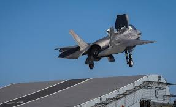

F-35
| length | 15.7 meters (51.4 feet) |
| width | 4.4 meters (14.4 feet) |
| speed | 1,200 mph or 1,930 km/h |
| radar range | 150–200 km. |
| combat radious | 1,100 km (685 miles) |
| wepons | Air-to-Air: AIM-120 AMRAAM, AIM-9X Sidewinder Air-to-Ground: JDAM, Paveway, SDB, AGM-154 JSOW Gun (F-35A only): GAU-22/A 25mm internal cannon (182 rounds). |
| made in | united states |
ThursterThe F-35 Lightning II is powered by the Pratt & Whitney F135 afterburning turbofan engine, one of the most powerful fighter jet engines in the world. It produces up to 43,000 pounds of thrust with afterburner, enabling the F-35 to reach speeds of Mach 1.6. The engine is designed for high performance, stealth, and durability, with advanced features like a low observable nozzle to reduce infrared signature. In the F-35B variant, the F135 is paired with a lift fan system for short takeoff and vertical landing (STOVL), a unique capability among modern stealth fightersThe F-35 Lightning II is powered by the Pratt & Whitney F135 afterburning turbofan engine, one of the most powerful fighter jet engines in the world. It produces up to 43,000 pounds of thrust with afterburner, enabling the F-35 to reach speeds of Mach 1.6. The engine is designed for high performance, stealth, and durability, with advanced features like a low observable nozzle to reduce infrared signature. In the F-35B variant, the F135 is paired with a lift fan system for short takeoff and vertical landing (STOVL), a unique capability among modern stealth fighters |
|
AIR BrakesThe F-35 Lightning II does not use traditional, dedicated air brakes like some older fighter
jets. Instead, it relies on a combination of control surfaces—such as the rudder, ailerons, and
horizontal stabilizers—to create aerodynamic drag and slow the aircraft when needed. This design
reduces weight and complexity while maintaining stealth characteristics. During landing or
deceleration maneuvers, these surfaces work together in a technique called "speed brake mode" to
effectively manage speed without compromising the jet's low radar signature |
 |